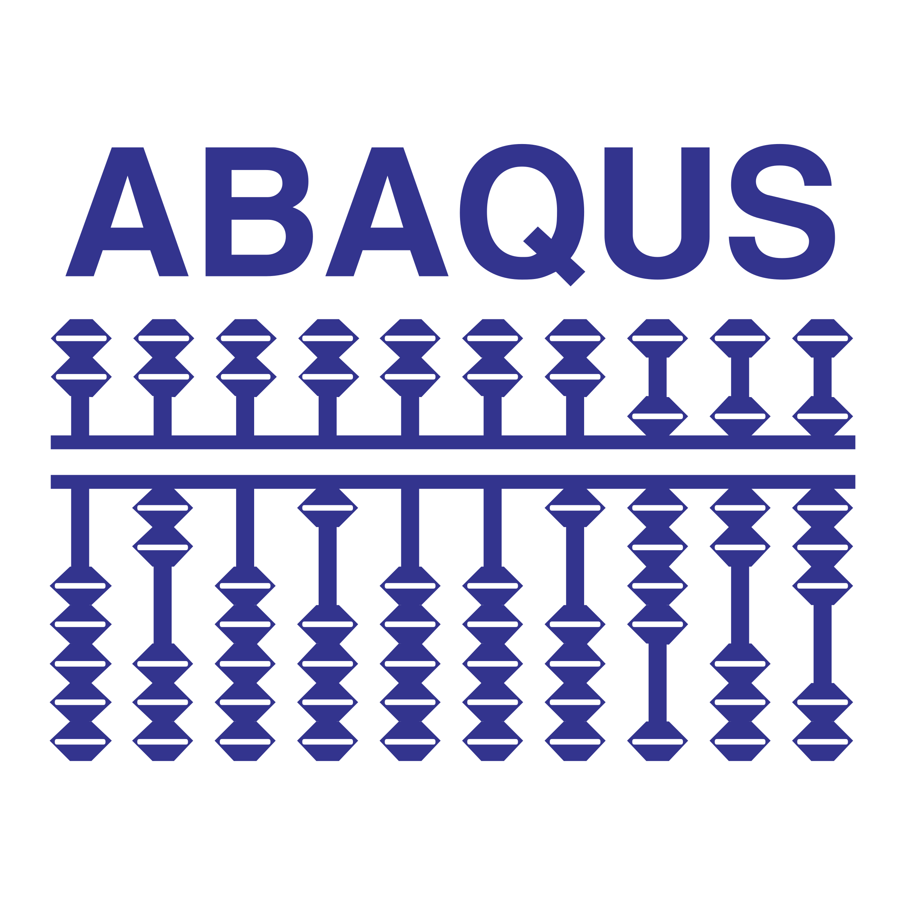

Camino a la Paleontología
Todo lo que me hubiera gustado saber antes de decidir ser paleontólogo
2026-04-13
Licencia en Biología (UDG)
- Carrera en Biología General
- Enfoque en vertebrados durante las ultimas etapas

¿Qué es la paleontología virtual?
La paleontología virtual es una disciplina emergente que utiliza tecnologías digitales para estudiar fósiles y reconstruir el pasado. Como herramienta digital, utiliza principalmente modelos 3D, escaneo láser y reconstrucción digital.


Escaneo láser. Se utilizan dispositivos de escaneo láser para capturar la forma de los fósiles.

scanner 3d
Fotogrametría. Se toman fotografías de los fósiles desde diferentes ángulos y se procesan con software especializado.
Fotogrametria
Tomografía computarizada. Se toman imágenes de secciones transversales mediante rayos-X de los fósiles y se reconstruyen en 3D.

Ct scanner
1. Morfometría Geométrica: ¿Y qué hacemos con los datos?
Con los datos obtenidos de la morfometría geométrica podemos hacer análisis estadísticos para comparar la forma de los fósiles.
Podemos por ejemplo comparar como la forma:
- Cambia a lo largo del tiempo.
- Cambia entre diferentes especies.
- Cambia entre diferentes sexos.
- Cambia entre diferentes poblaciones.
- Una forma particular se relaciona con una función particular.

2. Análisis Biomecánico: ¿Qué necesitamos para hacer un análisis biomecánico 3D?
Para hacer un análisis biomecánico 3D necesitamos:
- Un modelo 3D del fósil.
- Un software que nos permita editar el modelo 3D.
- Un software que nos permita hacer simulaciones de la función del fósil.


2. Análisis Biomecánico: Análisis de Elementos Finitos (FEA)
Para poder estimar la fuerza de mordida de un animal extinto necesitamos:
- Un modelo 3D del cráneo del animal.
- Reconstruir los músculos de la mandíbula y el cráneo.
- Definir las fuerzas de los músculos.
- Definir las propiedades mecánicas de los músculos y los huesos.
- Definir las condiciones de la simulación.
2. Análisis Biomecánico: Biomecánica muscular
Otro tipo de análisis biomecánico que se puede hacer con modelos 3D es el análisis de la biomecánica muscular.
Con este tipo de estudios podemos por ejemplo:
- Estimar la fuerza de mordida
- Estimar el ángulo de apertura o máximo rango de movimiento de un hueso
- Estimar la velocidad de cierre de la mandíbula

2. Análisis Biomecánico: Estimación de apertura máxima de la mandíbula
Usando modelos 3D del cráneo y la mandíbula, podemos estimar el ángulo de apertura máxima.
Para esto necesitamos:
- Un modelo 3D del cráneo y la mandíbula.
- Definir las articulaciones de la mandíbula.
- Definir los puntos de inserción de los músculos.
- Definir las propiedades mecánicas de los músculos (Cuánto se puede estirar, usualamente se usa un valor máximo de 1.7 veces)
- Definir las condiciones de la simulación.
2. Análisis Biomecánico: Estimación de apertura máxima de la mandíbula
Usando este enfoque, Lautenschlager (2015) estimó la apertura máxima de tres especies de dinosaurios terópodos (Tyrannosaurus rex, Allosaurus fragilis y Erlikosaurus andrewsi).

3. Análisis Biométrico: Estudio de apertura máxima de la mandíbula
Ejemplo animado de la estimación de la apertura máxima de un lobo